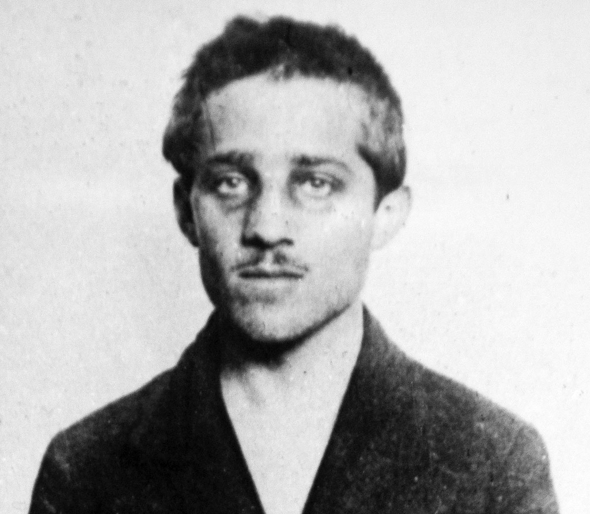

การ์โลปรินซิป (Gavrilo Princip)

กาฟริโล ปรินซิป (Gavrilo Princip) เป็นผู้ลอบสังหารอาร์ชดยุคฟรานซ์ เฟอร์ดินานด์ (Archduke Franz Ferdinand) องค์รัชทายาทแห่งจักรวรรดิออสเตรีย-ฮังการี ซึ่งเป็นชนวนเหตุสำคัญที่จุดประกายให้เกิด สงครามโลกครั้งที่ 1บทบาทและความสำคัญในประวัติศาสตร์มือสังหารแห่งซาราเยโว: ในวันที่ 28 มิถุนายน ค.ศ. 1914 ปรินซิปวัย 19 ปี สมาชิกกลุ่มชาตินิยม Young Bosnia และได้รับการสนับสนุนจากกลุ่มลับ Black Hand ได้ยิงพระองค์และพระชายาเสียชีวิตขณะเสด็จเยือนบอสเนียจุดชนวนสงคราม: เหตุการณ์นี้ทำให้ออสเตรีย-ฮังการีประกาศสงครามกับเซอร์เบีย ซึ่งดึงประเทศมหาอำนาจอื่นๆ ในยุโรปเข้าร่วมสงครามตาม สัญญาระหว่างประเทศ จนลุกลามกลายเป็นสงครามโลกครั้งที่ 1ผลลัพธ์ต่อตัวปรินซิป: เขาถูกจับกุมทันที แต่เนื่องจาก อายุยังไม่ครบ 20 ปี จึงรอดพ้นจากโทษประหารชีวิต และถูกตัดสินจำคุก 20 ปี ก่อนจะเสียชีวิตในคุกจากวัณโรคในปี ค.ศ. 1918